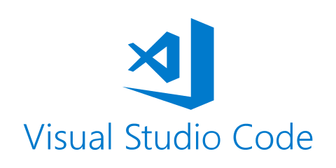

Assalamualaikum wr.wb. Oke, sebelumnya saya ingin mengucapkan terima kasih kepada kalian semua yang sudah berkunjung ke website saya ini. Saya sangat menghargai waktu kalian untuk membaca dan belajar bersama di sini. Semoga kita semua selalu diberikan kesehatan, kemudahan, dan keberkahan dalam setiap aktivitas. Terima kasih banyak.
Pada halaman ini, saya ingin membahas secara lengkap mengenai apa itu teks editor VSCODE atau Visual Studio Code, adalah sebuah software editor kode sumber yang dikembangkan oleh Microsoft dan digunakan untuk menulis berbagai bahasa pemrograman seperti HTML, CSS, JavaScript, Python, PHP, C++, dan masih banyak lagi.
Salah satu keunggulan utama dari VSCode adalah dukungan ekstensinya. Pengguna dapat menambahkan berbagai ekstensi seperti Live Server, Prettier, Emmet, GitHub Integration, dan masih banyak lainnya untuk meningkatkan produktivitas. Dengan ekstensi tersebut, kita dapat menjalankan website secara langsung, memformat kode otomatis, mempercepat penulisan kode, serta mengelola proyek menggunakan Git.
VSCode dapat digunakan pada berbagai sistem operasi seperti Windows, Linux, dan macOS, sehingga siapa pun bisa menggunakannya tanpa batasan perangkat. Bahkan, komunitas pengguna VSCode sangat besar, sehingga tutorial, plugin, dan bantuan sangat mudah ditemukan di internet.
Mungkin itu yang bisa saya jelaskan di halaman tentang VSCODE ini, mohan maaf jika ada kekurangan atas penjelasan saya ini, jika anda ingin melihat halaman lain tentang saya bisa kunjungi halaman saya seperti Halaman HTML, Halaman CSS, Halaman JavaScript, dll sebagainya, Anda juga bisa memberkan saya Dukungan jika anda bersedia. Oke terimakasih sudah mengunjugi halaman website saya ini sekian dan terimakasih Wasalammualaikum wr.wb.